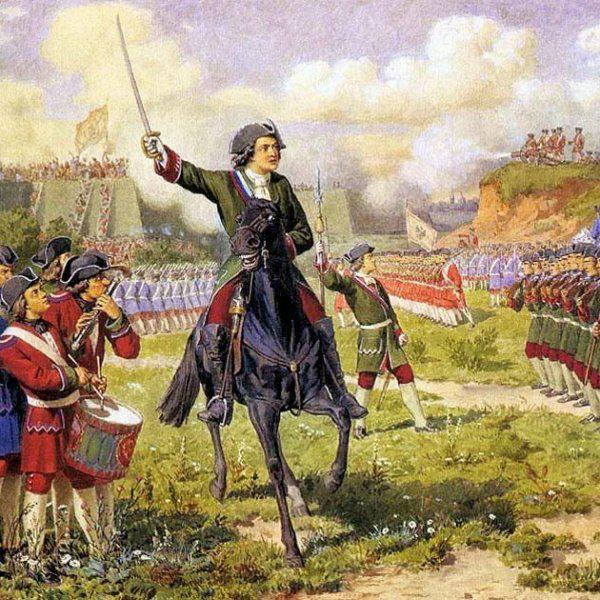
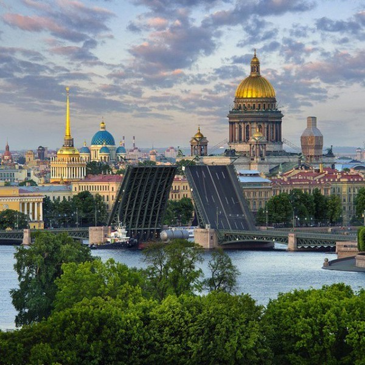
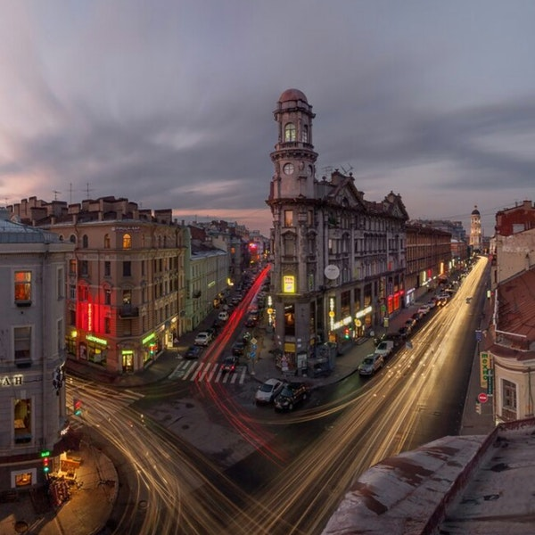
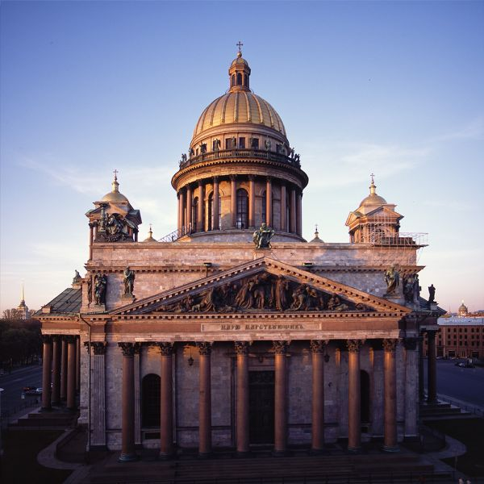
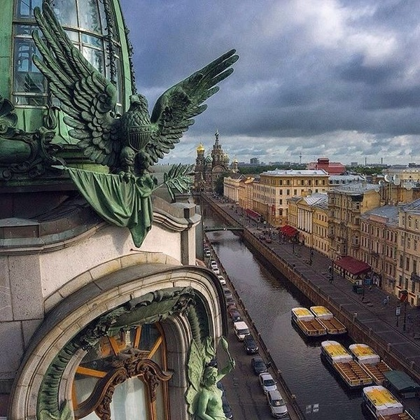
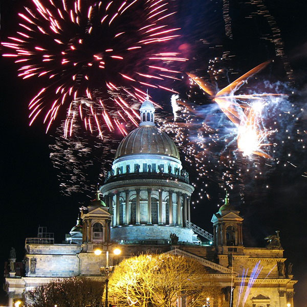
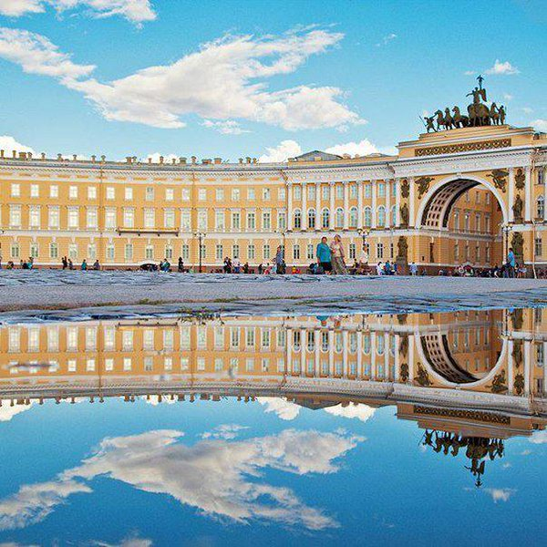
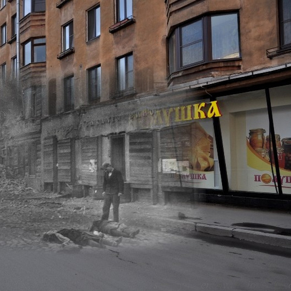
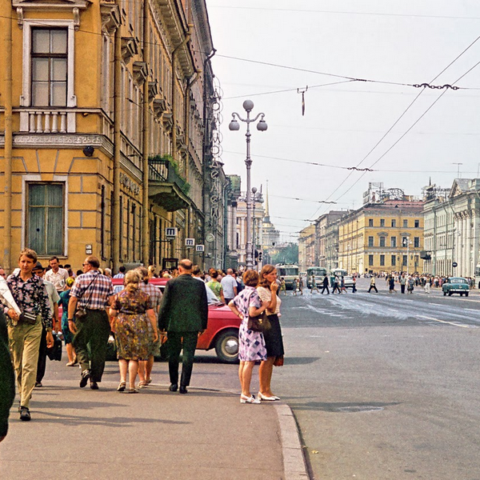
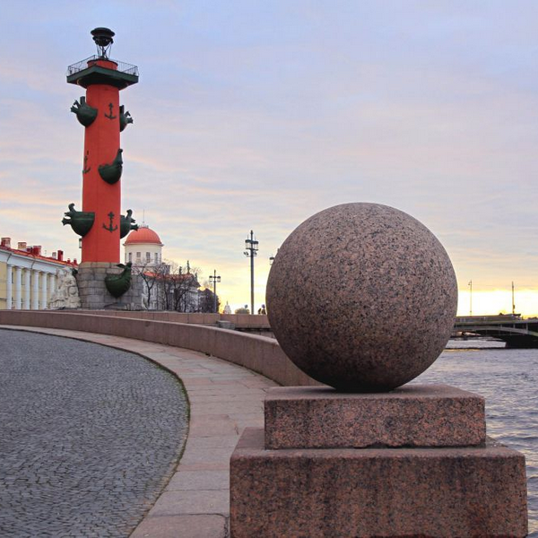

16 мая 1703 года стартовала постройка Петропавловской крепости по велению царя Петра I
По идее царя Санкт-Петербург должен был принять роль политической и культурной столицы страны, стать «новым Римом». Согласно задумке, город должен воплотить государственную мощь и влияние Европы: детище Петра и впрямь стало воистину Северной Жемчужиной, оправдавшей все надежды великого правителя.
Изначально крепость была заложена для совсем иных целей. Петропавловская крепость создана с целью контролирования Невы и Большой Невки: ведь шли боевые действия против Швеции, и город буквально явился ребенком войны.
Северная война протекала с 1700 до 1721 года между Швецией и северо-европейскими странами. Битва шла за хозяйство прибалтийскими землями и окончилась провалом Швеции. Россия отвоевала у шведов долину Невы, где вскоре заложили город, которому суждено стать великим. По завершении войны родилась империя, и благодаря своей новой столице – Санкт-Петербургу – она получила доступ к Балтийскому морю.
Так открылось «окно в Европу» – Россия наконец получила морские торговые пути с европейскими державами. Петербург стал неотъемлемым торговым звеном с соседними странами, но не позабыл о своём первоначальном предназначении: именно в Петербурге сосредоточен основной военно-морской флот.
В 1712 году Петербург официально назван столицей. Царский двор и важнейшие органы управления были перемещены из Москвы сюда: исключительный момент в истории, когда столица транспортировалась на территорию фактически чужого государства, и продержалась там не менее девяти лет. Таким образом, Петр I произвёл декларативный поворот столицы к Европе, сместив ценности империи к Западу. Следом пришли и принципиально новые государственная, культурная и общественная модели. Петербург по праву стал носить имя «Европейской столицы», став маленьким кусочком Европы в пределах страны – чем-то новым, свежим, с надеждой на большое будущее.
29 июня 1703 года город получил своё имя во славу святого апостола Петра, который стал его покровителем. Санкт-Питер-Бурх – именно так звучало название будущей столицы. Только спустя почти 20 лет эта имитация голландского звучания приобрела более немецкую форму: Санкт-Петербург. Поначалу имя носила только крепость, но позднее это наименование распространилось и на остальной город. Его зачастую зовут Петербургом, а то и вовсе сокращают до Питера.
В 1914 году Николай II объявил о смене названия на Петроград. Император не желал возникновения негативных ассоциаций, напоминающих иностранное звучание названия такого важного города его государства.
26 января 1924 года также стал судьбоносным: Петрограду было дано новое имя – Ленинград – в память В. И. Ленина, основоположника Советского государства, который скончался за пять дней до этой даты.
12 июня 1991 года был произведён социальный опрос: по его итогам более половины жителей проголосовали за первоначальное наименование. Вскоре – 6 сентября того же года – городу вернулось «родное» имя – Санкт-Петербург. Но в 1990-х в речи некоторого числа людей старшего поколения всё ещё можно было услышать советское «Ленинград». Сейчас же это название почти полностью исчезло из обихода, сохранившись лишь в упоминаниях в культуре или в наименованиях некоторых организаций.
Город также является едва ли не рекордсменом по количеству неофициальных названий:
28 июня 1914 года в Сараево случилось убийство наследника австро-венгерского трона, вследствие чего Австро-Венгрия объявила Сербии войну. 1 июля Россия приняла постановление на полномасштабную мобилизацию войск. Германия, будучи союзником Австро-Венгерского государства, потребовала прекратить эти меры, но Россия отказалась, вследствие чего 1 августа 1914 Германия объявила России войну. Вскоре к боевым действиям присоединились и другие европейские государства, за что сражение и получила статус мирового конфликта. Союзниками России в этой войне вызвались стать Франция и Англия.
На следующий же день — 2 августа 1914 года — на Дворцовую площадь высыпали тысячи горожан: все собрались, чтобы услышать слово императора российского Николая II. Тот дал слово на Святом Евангелии, что не посмеет объявить мир до тех пор, пока хотя бы один враг будет оставаться на земле империи, после чего явился на балкон Зимнего дворца, встретив бурные овации. Поддержка общества вдохновляла Николая II: народ искренне и от души верил своему великому правителю.
В Петербурге сформировался стойкий антинемецкий настрой. Германское посольство на Исаакиевской площади было зверски разгромлено бушующими людьми, демонстранты разрушали здания германских магазинов, не щадя ни одну фирму. Обитающим в Петербурге немцам тоже пришлось нелегко: горожане им угрожали и даже бессовестно нападали.
Также немало грязи полилось в сторону царицы, которая была когда-то германской принцессой. Петербуржцы обезумели в стремлении защитить свою Родину, порой доходя до крайностей.
Однако в это же время в Петрограде начались антивоенные стачки и демонстрации, высказывающиеся против войны. Особенно широко это явление проявило себя в 1915 году: насчитано не менее 125 городских стачек с участием до 130 тыс. человек.

Большевики, руководя стачечным движением, стремились к перевоплощению экономического протеста в политический, который будет направлен на низвержение монархии. Страна пресытилась царским самодержавием и в стране появились люди, твердо решившие, что с этим пора покончить.
В результате под влиянием активной пропаганды большевиков и отчетливых революционных настроений в стране произошёл резкий надлом в народном сознании, в том числе, в солдатском слое. С 1916 года в протестных демонстрациях рабочих стали принимать участие и солдаты.
Размах борьбы стал столь велик, что власти оказались вынуждены на время закрыть множество бастующих заводов, среди которых оказались Минный, Снарядный, завод Нобеля, Русского общества, Петроградский металлургический завод и множество других.
В феврале 1917 года организована мощная стачечная борьба, проведенная под громким лозунгом «Долой самодержавие!». Эти события были названы Февральской революцией. В итоге Николай II вынужденно отказался от царского престола. Власть захватила буржуазия, которая создала собственный орган управления – Временное правительство.
В Петрограде, а следом и в прочих городах страны, образовались Советы, которые стали органами власти пролетариата и крестьянства – таким образом, складывалось двоевластие. В результате всех последующих действий Большевистская партия развернула крупномасштабную войну за передачу реальной власти Советам.
Февральская революция стала немаловажной ступенью к социалистической революции в Российской Империи. Партия остро нуждалась в организованном плане действий . Этот план предоставил В. И. Ленин. Прибытие вождя в Петроград стал большим событием для города: представители партии, рабочих и других слоев населения прибыли на Финляндский вокзал чтобы с почестями встретить Владимира Ильича. В.И. Ленин поднялся на стоящий на привокзальной площади броневик – с этой импровизированной «трибуны» он произнес громкую речь, призывающую к социалистической революции.
Яркая и мощная агитация В. И. Ленина привела к вооружённому восстанию, которое случилось 25 октября 1917 года, и было отмечено на страницах истории Великой Октябрьской Революцией. В итоге борьбы власть досталась большевикам. Тут же сформировалась Российская Советская Республика с центром в Петрограде.
Такими событиями ознаменовался Санкт-Петербург на закате Первой мировой войны: в эти тяжёлые времена страна пережила не только внешнее сопротивление, но и внутреннее.
Подобные факты не могли не сказаться на названии города. Многие посчитали, что «Санкт-Петербург» звучит чересчур по-немецки, а учитывая мрачные переживания народа, это было недопустимым. Поэтому принято решение сменить наименование на более патриотичное «Петроград». Так город назывался последующие 10 лет. В этот отрезок времени в России – и в Петрограде в частности – происходили непростые события, разделившие российское общество пополам. Новое имя было присвоено только 26 января 1924 года. Петроград получил название Ленинград – в честь великого вождя В.И. Ленина. Именно под этим именем город окунулся в новую смертоносную войну.
Официально СССР вступил в войну 22 июня 1941 года. Прошло совсем немного времени и война обрушилась и на Ленинград: он оказался закован в военную блокаду, начиная с 8 сентября того же года.
Даже на начальный этап блокады в городе не находилось порядочного для долгой изоляции количества продуктов и топлива. Единственный контакт с остальным миром лежал через Ладожское озеро, но и оно оказалось не всегда способным помочь осаждённому городу. Начался повальный голод, который в условиях холодной зимы первых лет блокады превратился в настоящую катастрофу: сотни тысяч мучительных смертей горожан. Блокада длилась более трех лет, опустошив город и измучив несчастных горожан, но не сломив дух ленинградцев.
Прорыв блокады длился вплоть до января 1944 года. В процессе Ленинградско-Новгородской операции враг оказывается вынужден отступить на 220-280 км от южных черт Ленинграда – это дало глоток воздуха погибающей северной столице и вселило надежду в сердца горожан.
День снятия блокады отмечается 27 января. За героизм, который проявили доблестные защитники блокадного Ленинграда, 8 мая 1965 года город торжественно отмечен статусом Города-героя.
После этих разрушительных действий стартовало полномасштабное обновление. В сентябре 1945 наступил долгожданный мирный учебный год и торжественно начался сезон концертов в Филармонии. Через пять лет после завершения войны начал работу стадион Кирова. Ещё через год официально принят крупный план развития Ленинграда. Стали отстраиваться новые городские проекты: площади Ленина и Калинина, проспекты Энгельса и Стачек, Приморский и Среднеохтинский проспекты. В следующем году начинает отправлять первые рейсы Пулково.
5 ноября 1955 торжественно открыт ленинградский метрополитен. Люди настолько отвыкли от войны, что их больше не пугали полуденные пушечные залпы со стен Петропавловской крепости: традиция была возобновлена после более чем 20-летнего молчания.
На Марсовом поле зажгли первый в стране Вечный огонь – в знак памяти отважным бойцам. Впервые в мире спускается на воду атомный ледокол с гордым именем «Ленин», а Кировский завод начал выпускать знаменитые тракторы «Кировец». 1960 год был ознаменован открытием Мемориала жертвам Блокады.
Окончилась отстройка нового Финляндского вокзала. Ещё через два года была открыта телебашня и воздвигнут телецентр. Вскоре стартовала застройка «хрущёвками», а начиная с 1970-х к ним прибавились «дома-корабли». К юбилею революции в 1967 году был открыт дворец спорта «Юбилейный» и концертный зал «Октябрьский» — всё вокруг напоминало о свершившейся революции.
Также в 1979 году стартовала постройка дамбы на Финском заливе, призванная оберегать жителей от частых наводнений. Спустя ещё три года отстроили Морской вокзал. Город медленно приходил в норму после разрушительных войн. В 1990 году центр Ленинграда удостоился чести быть внесенным в список объектов Всемирного наследия ЮНЕСКО.
С развалом СССР возвращается название Санкт-Петербург.
Игры доброй воли 1994 года стали крупным мероприятием для Петербурга. Они были открыты на стадионе Кирова президентом Борисом Ельциным. Российскими спортсменами были поставлены мировые рекорды. В 2000 году открылся Ледовый дворец, где был проведён мировой чемпионат хоккею. Россия заявила о себе на мировой арене спорта. Уже в 2017 году на стадионе «Крестовский» проведены футбольные матчи группового этапа и финал кубка конфедераций ФИФА. На 2018 год запланированы прочие важные футбольные матчи.
15 декабря 2004 года открылся Вантовый мост, а в 2005 создан план тотального развития Санкт-Петербурга вплоть до 2025 года. Также в период с 1998 по 2011 годы произведена постройка кольцевой автодороги. Город становится индустриальнее и масштабнее.
Начиная с 1997 года стал проводиться экономический саммит который также называют «Русский Давос». А в 2006 в Стрельне произошёл саммит «большой восьмёрки». Среди важных событий стоит также отметить то, что 31 августа 2011 года губернатором назван Георгий Полтавченко, который занимает это кресло по сей день.
Пройдя немало испытаний, город, рождённый в войне, умылся кровью и прошёл через множество бед, но вырос, став великим городом-героем. Санкт-Петербург, бывший когда-то военной крепостью, стал огромным мегаполисом с множеством перспектив и возможностей, но не забыл о своей истории, сохранив в самом сердце самые древние постройки.
В Петербург стекается множество туристов и новых жителей, здесь происходит смешение восточной и западной культур и открываются новые пути – великий основатель гордился бы своим не менее великим детищем. Наследникам этой грандиозной истории остаётся лишь пожинать плоды предков и закладывать новое будущее, ведя город к новым великим свершениям, продолжая писать историю, но никогда не забывая об уже написанных страницах.